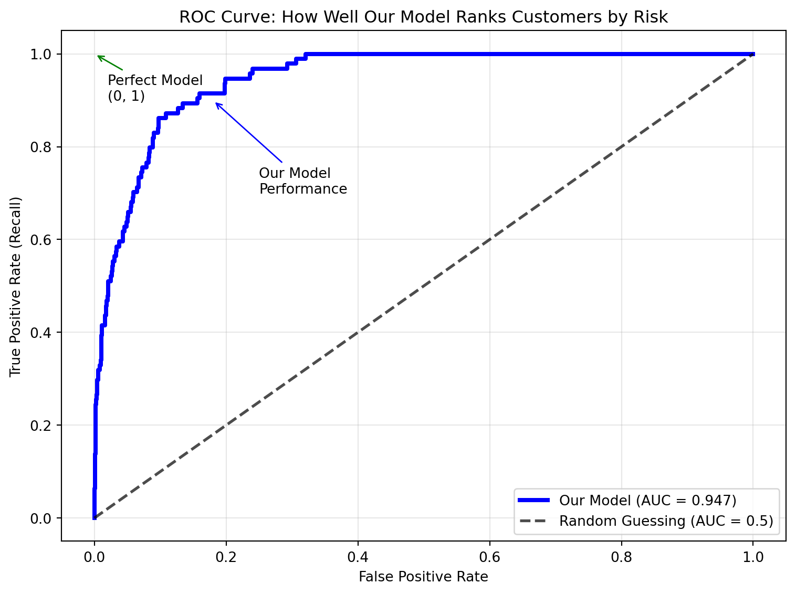
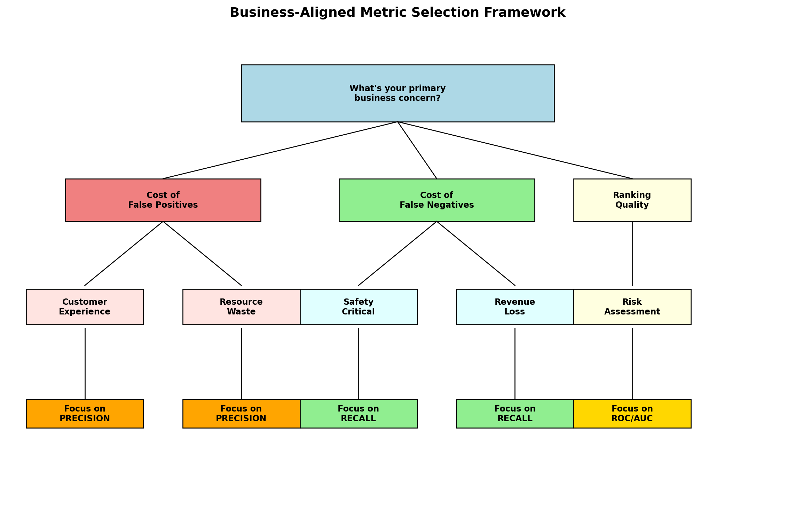

In the previous chapter, you learned to build logistic regression models using the Default dataset from ISLP, successfully creating both simple (balance-only) and multiple regression models that achieved 97.3% accuracy in predicting customer default. But building a model is only the beginning. The critical question that follows is: How good is your classification model?
While 97.3% accuracy sounds impressive, you discovered that the Default dataset has a severe class imbalance problem—only 3% of customers actually default. This means your logistic regression model could achieve high accuracy simply by predicting “no default” for almost everyone, without actually learning to identify customers who are at risk of defaulting.
Consider these high-stakes scenarios:
A bank’s fraud detection system flags legitimate transactions as fraudulent, blocking customers from making purchases
A medical screening test misses early-stage diseases, delaying critical treatment
An email spam filter sends important business emails to the junk folder
A hiring algorithm systematically rejects qualified candidates from certain demographics
NoteExperiential Learning
Think about a time when an automated system made the wrong classification decision about you—maybe your bank blocked a legitimate purchase, spam filter caught an important email, or a website incorrectly classified your account status.
How did this incorrect classification affect you? What were the costs or frustrations? Would you have preferred the system to err in the other direction instead?
By the end of this chapter, you’ll understand how to measure and optimize classification systems to minimize these real-world business costs.
Classification evaluation goes far beyond simple accuracy. In business contexts, different types of errors often have vastly different costs, and understanding these trade-offs is crucial for building models that truly serve business objectives. Using the Default dataset context from the previous chapter, this chapter teaches you to evaluate classification models using metrics that align with business reality.
By the end of this chapter, you will be able to:
Identify the “accuracy trap” and explain why 97.3% accuracy can be misleading with the Default dataset’s 3% default rate
Construct and interpret confusion matrices to understand exactly how your model makes errors
Calculate precision, recall, and F1-score and explain their business implications for different scenarios
Use ROC curves and AUC to evaluate model ranking quality for risk-based pricing strategies
Design business-aligned evaluation frameworks that select appropriate metrics based on specific costs and connect model performance to real-world outcomes
Note📓 Follow Along in Colab!
As you read through this chapter, we encourage you to follow along using the companion notebook in Google Colab (or another editor of your choice). This interactive notebook lets you run all the code examples covered here—and experiment with your own ideas.
When most people think about evaluating a classification model, they naturally gravitate toward accuracy—the percentage of predictions that are correct. While accuracy seems intuitive and straightforward, it can be deeply misleading in real business scenarios.
The Accuracy Trap: When 95% Accuracy is Actually Terrible
Let’s explore this with a concrete business example. Imagine you work for a credit card company building a fraud detection system. You have 100,000 transactions, and historically, only 1% are fraudulent:
Fraudulent transactions: 1,000 (1%)
Legitimate transactions: 99,000 (99%)
Now consider two possible fraud detection models:
Model A (Lazy): Always predicts “legitimate” for every transaction
Model B (Smart): Uses sophisticated algorithms to identify 80% of fraud while incorrectly flagging 2% of legitimate transactions
We’ve trained both models on our dataset, and at first glance, they appear to perform quite similarly:
Model A (Lazy): 99.0% accuracy
Model B (Smart): 97.8% accuracy
Show code for model comparison simulation
import pandas as pdimport numpy as npfrom sklearn.metrics import accuracy_score, confusion_matrix, classification_reportfrom sklearn.metrics import precision_score, recall_score, f1_score, roc_auc_score, roc_curveimport matplotlib.pyplot as pltimport seaborn as sns# Simulate fraud detection scenarionp.random.seed(42)n_transactions =100000fraud_rate =0.01# True labels: 1% fraud, 99% legitimatey_true = np.random.binomial(1, fraud_rate, n_transactions)# Model A: "Lazy" model that always predicts "legitimate" y_pred_lazy = np.zeros(n_transactions) # Always predicts 0 (legitimate)# Model B: "Smart" model that catches some fraud but makes some mistakes# Let's say it correctly identifies 80% of fraud and incorrectly flags 2% of legitimate transactionsy_pred_smart = y_true.copy()# Miss 20% of fraud (false negatives)fraud_indices = np.where(y_true ==1)[0]missed_fraud = np.random.choice(fraud_indices, int(0.2*len(fraud_indices)), replace=False)y_pred_smart[missed_fraud] =0# Flag 2% of legitimate transactions as fraud (false positives) legit_indices = np.where(y_true ==0)[0]false_flags = np.random.choice(legit_indices, int(0.02*len(legit_indices)), replace=False)y_pred_smart[false_flags] =1# Calculate accuraciesaccuracy_lazy = accuracy_score(y_true, y_pred_lazy)accuracy_smart = accuracy_score(y_true, y_pred_smart)print("Fraud Detection Model Comparison:")print(f"Dataset: {n_transactions:,} transactions, {fraud_rate:.1%} fraud rate")print(f"\nModel A (Lazy): {accuracy_lazy:.1%} accuracy")print(f"Model B (Smart): {accuracy_smart:.1%} accuracy")print(f"\nWhich model would you choose for your business?")
Fraud Detection Model Comparison:
Dataset: 100,000 transactions, 1.0% fraud rate
Model A (Lazy): 99.0% accuracy
Model B (Smart): 97.8% accuracy
Which model would you choose for your business?
The Shocking Reality Behind These Numbers:
The results reveal a counterintuitive and deeply problematic outcome: the “lazy” model achieves 99.0% accuracy by never detecting fraud, while the “smart” model only achieves 97.8% accuracy despite actually catching 80% of fraudulent transactions!
This demonstrates the fundamental problem with accuracy in imbalanced datasets—it can make completely useless models appear excellent. The lazy model provides zero business value (catches 0% of fraud) yet appears superior by accuracy metrics. Meanwhile, the smart model that actually protects the business from financial losses appears inferior by the same metric.
This is exactly the trap that the 97.3% accuracy from chapter 23’s Default dataset model could represent—high accuracy that masks the model’s inability to identify the minority class (defaults) that the business actually cares about detecting.
Class Imbalance: When the Obvious Choice is Wrong
Class imbalance occurs when one category significantly outnumbers the others. This is extremely common in business:
Fraud detection: <1% of transactions are fraudulent
Medical screening: <5% of patients have rare diseases
Customer churn: <10% of customers leave per month
Email spam: ~15% of emails are spam
Quality control: <2% of products are defective
In these scenarios, a model can achieve high accuracy by simply predicting the majority class, but this provides zero business value.
The Accuracy Paradox Gets Worse with Extreme Imbalance:
To understand just how misleading accuracy becomes, let’s examine what happens when a “lazy model” (that always predicts the majority class) encounters different levels of class imbalance. The results are striking and counterintuitive:
Fraud Rate
Lazy Model Accuracy
Business Value
50.0%
50.0%
None - catches 0% of fraud
10.0%
90.0%
None - catches 0% of fraud
5.0%
95.0%
None - catches 0% of fraud
1.0%
99.0%
None - catches 0% of fraud
0.1%
99.9%
None - catches 0% of fraud
The paradox is clear: The lazy model gets better accuracy as fraud becomes rarer, but provides ZERO business value by never catching fraud! This is exactly what happened with our Default dataset from chapter 23—the rarer the default events (3% rate), the easier it becomes for a useless model to achieve impressive accuracy scores.
Real Business Costs Matter More Than Accuracy
In business, different prediction errors have different costs. While accuracy treats all errors equally, understanding the specific types of errors—False Positives and False Negatives—in relation to your business problem is crucial for making informed decisions about model performance and thresholds.
Understanding the Two Types of Classification Errors:
False Positive (FP): Your model predicts the positive class (fraud, disease, spam) when it’s actually negative (legitimate, healthy, normal email)
False Negative (FN): Your model predicts the negative class when it’s actually positive (missing the thing you’re trying to detect)
The key insight is that these errors rarely have equal business impact. Understanding which type of error is more costly for your specific business context helps guide model evaluation, threshold selection, and deployment decisions.
Business Example
False Positive (FP)
False Negative (FN)
Credit Card Fraud Detection
Flagging legitimate transaction as fraud: Customer tries to make a purchase but card is declined. Creates customer frustration, potential embarrassment at checkout, and may lead to customers switching to competitors. Bank loses transaction fees and risks customer churn (~$50 cost per incident)
Missing actual fraud: Fraudulent transactions go undetected, resulting in direct financial losses to the bank, potential legal liability, and costs associated with identity theft resolution for customers. Often involves multiple fraudulent transactions before detection (~$500-5,000 cost per incident)
Medical Cancer Screening
Incorrectly diagnosing healthy patient with cancer: Patient experiences severe psychological distress, undergoes unnecessary and potentially harmful treatments, faces insurance complications, and incurs substantial medical costs for follow-up tests and procedures (~$1,000-10,000 cost)
Missing actual cancer: Early-stage cancer goes undetected, leading to delayed treatment when disease has progressed to advanced stages. Dramatically reduces treatment success rates, increases treatment complexity and costs, and can be life-threatening (~$100,000+ cost, plus immeasurable human cost)
Email Spam Filter
Important business email sent to spam folder: Critical business communications are missed, potentially leading to lost deals, missed meetings, delayed responses to urgent matters, and damaged professional relationships (~$500 cost per important missed email)
Spam reaching inbox: Users experience minor inconvenience from deleting unwanted emails, potential exposure to phishing attempts, and slight productivity loss from processing irrelevant content (~$1 cost per spam email)
These cost differences mean that accuracy—which treats all errors equally—provides little guidance for business decision-making.
Knowledge Check
NoneUnderstanding Business Costs
Consider these business scenarios and identify which type of error would be more costly:
Airport Security Screening: Flagging safe passengers vs. missing dangerous items
Which error is more costly? Why?
How might this influence the screening threshold?
Job Application Screening: Rejecting qualified candidates vs. interviewing unqualified candidates
What are the business costs of each error type?
How might company hiring needs affect this trade-off?
Product Quality Control: Rejecting good products vs. shipping defective products
Consider both immediate costs and long-term reputation effects
How would the costs differ for luxury vs. budget products?
24.2 The Confusion Matrix: Foundation for Classification Evaluation
The confusion matrix provides the foundation for understanding classification model performance by breaking down predictions into four categories. Rather than just telling you the percentage of correct predictions, it shows you exactly how your model is making mistakes.
Understanding What a Confusion Matrix Shows
Before diving into real examples, let’s understand the conceptual framework of a confusion matrix. Think of it as a 2×2 table that organizes all possible prediction outcomes:
False Positives (FP): Model incorrectly predicts positive (e.g., safe customer flagged as high risk) - Type I Error
False Negatives (FN): Model incorrectly predicts negative (e.g., risky customer marked as safe) - Type II Error
The key insight is that correct predictions (TP and TN) lie on the diagonal, while errors (FP and FN) lie off the diagonal.
Note🎥 Video Spotlight: The Confusion Matrix
A great introduction to the confusion matrix.
Applying the Confusion Matrix to Our Default Prediction Model
Now let’s see how this framework applies to the same logistic regression model from chapter 23. We’ll use the exact same dataset preparation and model to ensure consistency:
# Use the Default dataset from chapter 23 with identical preparationfrom sklearn.model_selection import train_test_splitfrom sklearn.linear_model import LogisticRegressionfrom ISLP import load_data# Load and prepare data exactly as in chapter 23Default = load_data('Default')Default_encoded = pd.get_dummies(Default, columns=['student'], drop_first=True)Default_encoded['default_binary'] = (Default_encoded['default'] =='Yes').astype(int)# Use the same feature matrix and target as chapter 23X = Default_encoded[['balance', 'income', 'student_Yes']]y = Default_encoded['default_binary']# Split the data using the same approach as chapter 23 for consistencyX_simple = Default_encoded[['balance']]X_simple_train, X_simple_test, X_train, X_test, y_train, y_test = train_test_split( X_simple, X, y, test_size=0.3, random_state=42)# Fit the same logistic regression model from chapter 23model = LogisticRegression(random_state=42)model.fit(X_train, y_train)# Make predictions on test sety_pred = model.predict(X_test)y_pred_proba = model.predict_proba(X_test)[:, 1]# Create confusion matrixcm = confusion_matrix(y_test, y_pred)print("Confusion Matrix for Default Prediction Model:")print(cm)print(f"\nDataset context (matching chapter 23 results):")print(f"Total test examples: {len(y_test):,}")print(f"Actual default cases: {y_test.sum():,} ({y_test.mean():.1%})")print(f"Actual non-default cases: {len(y_test) - y_test.sum():,} ({1-y_test.mean():.1%})")
Confusion Matrix for Default Prediction Model:
[[2895 11]
[ 69 25]]
Dataset context (matching chapter 23 results):
Total test examples: 3,000
Actual default cases: 94 (3.1%)
Actual non-default cases: 2,906 (96.9%)
Interpreting the Confusion Matrix Results
The matrix [[2895, 11], [69, 25]] represents our model’s performance in a 2×2 format where:
Position [0,0]: 2,895 = True Negatives (correctly identified non-default customers)
Position [0,1]: 11 = False Positives (safe customers incorrectly flagged as default risk)
Position [1,0]: 69 = False Negatives (risky customers that were missed)
Position [1,1]: 25 = True Positives (correctly identified default customers)
Model Strengths:
Successfully identifies the vast majority of non-default customers
Achieves the same 97.3% accuracy we saw in chapter 23
Shows very few false alarms (only 11 safe customers incorrectly flagged)
Demonstrates consistency with the logistic regression results from the previous chapter
Model Limitations:
Catches only 25 out of 94 actual default cases
Misses 69 customers who will actually default (73.4% of defaults missed)
The severe class imbalance (3.1% default rate) makes detecting the minority class challenging
ImportantBusiness Impact Analysis
For a credit card company, the confusion matrix components translate directly to business costs:
False Positives (11 customers): Good customers denied credit or charged higher rates → Lost revenue, customer churn
False Negatives (69 customers): Bad customers approved for credit → Direct financial losses from defaults
This analysis demonstrates why accuracy alone can be misleading—while our model achieves high overall accuracy, it fails to identify most actual default cases, which represents the primary business value we’re seeking. Understanding these trade-offs helps determine whether the model’s performance aligns with business objectives and risk tolerance.
Knowledge Check
NoneReading Confusion Matrices
Given this confusion matrix for a customer churn prediction model:
Predicted
Stay Churn
Actual Stay 1850 150
Churn 200 100
Calculate and interpret:
Basic metrics: What’s the accuracy of this model?
Business interpretation:
How many customers who churned were correctly identified?
How many “churn risk” alerts were false alarms?
What’s the cost if each missed churn loses $500 and each false alarm costs $50 in intervention efforts?
Model assessment: To improve business value with this model, would you rather focus on reducing the number of false positives or false negatives?
24.3 Essential Classification Metrics: Precision, Recall, and F1-Score
While accuracy treats all errors equally, business decisions require understanding the specific types of errors your model makes. This section builds on our confusion matrix foundation to introduce precision, recall, and F1-score—metrics that help align model evaluation with business priorities.
Step 1: Quick Refresh - Extracting Key Values from the Confusion Matrix
Before diving into advanced metrics, let’s quickly review how we extract the fundamental building blocks from our confusion matrix:
# Extract the four core values from our confusion matrixtn, fp, fn, tp = cm.ravel()total = tn + fp + fn + tp# Manually calculate basic accuracyaccuracy = (tp + tn) / total
Show code for printing results
print("Confusion Matrix Components for Default Prediction:")print("="*60)print(f"True Negatives (TN): {tn:,} - Correctly identified non-default customers")print(f"False Positives (FP): {fp:,} - Safe customers incorrectly flagged as high risk")print(f"False Negatives (FN): {fn:,} - Risky customers that were missed")print(f"True Positives (TP): {tp:,} - Correctly identified default customers")print(f"Total customers: {total:,}")print(f"\nAccuracy = (TP + TN) / Total = ({tp} + {tn}) / {total} = {accuracy:.3f} or {accuracy:.1%}")
Confusion Matrix Components for Default Prediction:
============================================================
True Negatives (TN): 2,895 - Correctly identified non-default customers
False Positives (FP): 11 - Safe customers incorrectly flagged as high risk
False Negatives (FN): 69 - Risky customers that were missed
True Positives (TP): 25 - Correctly identified default customers
Total customers: 3,000
Accuracy = (TP + TN) / Total = (25 + 2895) / 3000 = 0.973 or 97.3%
These four values (TP, TN, FP, FN) are the foundation for all classification metrics. Think of them as the raw ingredients that we’ll use to cook up more sophisticated measures.
Step 2: Precision and Recall - The Core Business Metrics
Now let’s use these building blocks to calculate precision and recall, two metrics that directly address business concerns about model performance. But before you read on, watch this short video as a simple primer on precision and recall with a clear example:
Understanding Precision: “When I Act on a Prediction, How Often Am I Right?”
Precision answers the question: “Of all the times my model predicts the positive class (default, fraud, spam), what percentage are actually correct?”
TipBusiness Translation: When Precision Matters Most
Precision is critical when acting on a prediction is expensive or disruptive. In business contexts, this means:
High precision = Few false alarms = Lower operational costs and better customer experience
Low precision = Many false alarms = Wasted resources, frustrated customers, and damaged trust
Think of precision as answering: “When I decide to take action based on my model’s prediction, how confident can I be that I’m making the right decision?”
Real-world impact: A credit approval model with low precision might deny loans to many qualified applicants, leading to lost revenue and competitor advantage.
Recall is critical when missing a positive case is costly or dangerous. In business contexts, this means:
High recall = Catch most/all important cases = Minimize catastrophic misses
Low recall = Miss many important cases = Risk serious consequences and liability
Think of recall as answering: “Of all the critical situations that actually exist, am I catching enough of them to protect my business and stakeholders?”
Real-world impact: A medical screening test with low recall might miss cancer cases, leading to delayed treatment when early detection could be life-saving. The cost of missing these cases far outweighs the inconvenience of false alarms.
Business Examples Where Recall is Critical:
Disease Screening: Missing cancer cases delays treatment → life-threatening
Now let’s calculate recall for our Default prediction model and see what it tells us about our model’s performance:
# Calculate recall manually and verify with sklearnrecall = tp / (tp + fn)# Verify with sklearn's recall_score functionfrom sklearn.metrics import recall_scoresklearn_recall = recall_score(y_test, y_pred)
Show code for detailed recall analysis
print("RECALL ANALYSIS")print("="*30)print(f"Recall = TP / (TP + FN) = {tp} / ({tp} + {fn}) = {recall:.3f} or {recall:.1%}")print(f"\nBusiness Interpretation:")print(f"• Our model catches {recall:.1%} of all customers who actually default")print(f"• Out of {tp + fn} customers who actually defaulted, we caught {tp}")print(f"• We missed {fn} customers who defaulted (this could be costly!)")print(f"\nSklearn verification:")print(f"• Manual calculation: {recall:.3f}")print(f"• sklearn recall_score: {sklearn_recall:.3f}")print(f"• Results match: {'✓'ifabs(recall - sklearn_recall) <0.001else'✗'}")
RECALL ANALYSIS
==============================
Recall = TP / (TP + FN) = 25 / (25 + 69) = 0.266 or 26.6%
Business Interpretation:
• Our model catches 26.6% of all customers who actually default
• Out of 94 customers who actually defaulted, we caught 25
• We missed 69 customers who defaulted (this could be costly!)
Sklearn verification:
• Manual calculation: 0.266
• sklearn recall_score: 0.266
• Results match: ✓
Putting this Together for Our Default Prediction Model
Now that we’ve calculated both precision and recall, let’s understand what they tell us about our Default prediction model’s performance and how they address different business concerns:
Key Difference Reminder:
Precision focuses on the accuracy of our positive predictions: “When we flag a customer as high-risk, how often are we correct?”
Recall focuses on completeness of detection: “Of all customers who will actually default, what percentage do we catch?”
For credit risk management, this creates a classic business trade-off:
High precision keeps customers happy (fewer false alarms) but may miss some defaults
High recall catches more defaults but may frustrate good customers with false flags
Let’s see how our model performs on both dimensions:
Show code for comprehensive Default model evaluation
print("DEFAULT PREDICTION MODEL EVALUATION")print("="*40)print(f"Precision: {precision:.1%} - When we flag someone as high risk, we're right {precision:.1%} of the time")print(f"Recall: {recall:.1%} - We catch {recall:.1%} of all customers who actually default")# Business cost implicationsprint(f"\nBusiness Impact:")print(f"• High precision ({precision:.1%}) = Few false alarms = Happy customers")print(f"• Low recall ({recall:.1%}) = Miss many defaults = Financial losses")print(f"\nThis suggests our model is conservative - it makes fewer false accusations,")print(f"but it misses many customers who will actually default.")
DEFAULT PREDICTION MODEL EVALUATION
========================================
Precision: 69.4% - When we flag someone as high risk, we're right 69.4% of the time
Recall: 26.6% - We catch 26.6% of all customers who actually default
Business Impact:
• High precision (69.4%) = Few false alarms = Happy customers
• Low recall (26.6%) = Miss many defaults = Financial losses
This suggests our model is conservative - it makes fewer false accusations,
but it misses many customers who will actually default.
Step 3: The Precision-Recall Trade-off and F1-Score
In most real-world scenarios, there’s a fundamental tension between precision and recall. Improving one often hurts the other. Understanding this trade-off leads us to a metric know as the F1-score.
Why the Trade-off Exists
The precision-recall trade-off stems from how classification models make decisions. Most models (including logistic regression) output probabilities rather than direct classifications. To make final predictions, we apply a decision threshold (typically 0.5) where:
Probabilities ≥ 0.5 → Predict “Default”
Probabilities < 0.5 → Predict “No Default”
The Business Reality: Adjusting this threshold changes how many customers we flag as risky, creating the trade-off:
Lower threshold (e.g., 0.3): Flag more customers as risky
Effect: Catch more actual defaults (higher recall) but also flag more safe customers (lower precision)
Business impact: Better default detection but more customer complaints
Higher threshold (e.g., 0.7): Flag fewer customers as risky
Effect: When we do flag someone, we’re usually right (higher precision) but miss more defaults (lower recall)
Business impact: Happier customers but more financial losses
Think of it like airport security: Stricter screening catches more threats but inconveniences more innocent travelers. Looser screening is faster but might miss dangerous items.
Let’s demonstrate this trade-off with our Default dataset:
Show code for precision-recall trade-off demonstration
# Demonstrate the precision-recall trade-offprint("PRECISION-RECALL TRADE-OFF DEMONSTRATION")print("="*45)# Test different thresholdsthresholds = [0.1, 0.3, 0.5, 0.7, 0.9]print(f"{'Threshold':<12}{'Precision':<12}{'Recall':<12}{'Business Impact'}")print("-"*70)for threshold in thresholds:# Make predictions at this threshold y_pred_thresh = (y_pred_proba > threshold).astype(int)if y_pred_thresh.sum() >0: # Avoid division by zero prec = precision_score(y_test, y_pred_thresh) rec = recall_score(y_test, y_pred_thresh)# Interpret the business impactif threshold <=0.3: impact ="Flag many as risky - catch more defaults but annoy customers"elif threshold >=0.7: impact ="Flag few as risky - happy customers but miss defaults"else: impact ="Balanced approach"print(f"{threshold:<12.1f}{prec:<12.3f}{rec:<12.3f}{impact}")else:print(f"{threshold:<12.1f}{'N/A':<12}{'0.000':<12} No customers flagged as risky")
PRECISION-RECALL TRADE-OFF DEMONSTRATION
=============================================
Threshold Precision Recall Business Impact
----------------------------------------------------------------------
0.1 0.273 0.691 Flag many as risky - catch more defaults but annoy customers
0.3 0.487 0.415 Flag many as risky - catch more defaults but annoy customers
0.5 0.694 0.266 Balanced approach
0.7 0.750 0.128 Flag few as risky - happy customers but miss defaults
0.9 0.500 0.011 Flag few as risky - happy customers but miss defaults
F1-Score: Balancing Precision and Recall
In many business scenarios, you can’t simply choose to optimize only precision or only recall. You need a single metric that captures both dimensions of model performance. Not only is it easier to explain one number than two separate metrics to business leaders, but often its because the business problem requires us to balance the performance of both precision and reall.
TipExamples when a single metric is helpful
Marketing campaigns: You need both precise targeting (don’t waste budget) AND good coverage (reach enough prospects)
Quality control: You need to catch defects (recall) while avoiding shutdowns for false alarms (precision)
Model comparison: When comparing multiple models, you need a single metric rather than separate precision and recall scores
The F1-score provides a single metric that combines precision and recall using the harmonic mean:
Our Default prediction model achieves an F1-score of 0.385 (38.5%), which reveals important insights about its performance and business implications. This relatively low F1-score reflects the fundamental challenge of predicting rare events in highly imbalanced datasets—while our model demonstrates good precision (69.4%), meaning that when it flags a customer as high-risk it’s usually correct, it suffers from poor recall (26.6%), missing nearly three-quarters of customers who will actually default.
For a credit card company, this represents a critical business trade-off. The model’s conservative approach minimizes customer complaints from false alarms (maintaining good customer relationships), but it comes at the cost of substantial financial losses from the 69 defaults that go undetected. The low F1-score suggests that if the business objective requires balanced performance—catching more defaults while maintaining reasonable precision—the current 0.5 probability threshold may be too conservative. Lowering the threshold to capture more defaults would improve recall but reduce precision, highlighting the fundamental tension between these metrics that F1-score helps quantify in a single measure.
Knowledge Check
NonePrecision vs. Recall Business Decisions
For each scenario, determine whether you would prioritize precision, recall, or balanced F1-score:
Airport Security: TSA screening for dangerous items
Which metric should be prioritized? Why?
What are the consequences of optimizing for the wrong metric?
Job Resume Screening: Initial filter for qualified candidates
How do you balance missing good candidates vs. interviewing unqualified ones?
How might this change if you’re hiring for a critical, hard-to-fill position?
What happens if precision is too low? If recall is too low?
How does the business model (advertising revenue vs. direct sales) affect this?
Quality Control: Detecting defective products before shipping
Consider both immediate costs and long-term brand reputation
How might this differ for safety-critical vs. cosmetic defects?
24.4 ROC Curves and AUC: When You Need to Rank Customers
So far we’ve focused on making binary decisions—default or no default. But many business scenarios need something different: ranking customers from lowest risk to highest risk. This is where ROC curves and AUC become essential.
NoteWhen Rankings Matter More Than Binary Decisions:
Insurance pricing: You need to charge different rates based on risk levels, not just approve/deny
Loan approval workflows: Create different approval tiers with varying terms and rates
Marketing prioritization: Rank prospects from most likely to least likely to respond
Investment analysis: Score opportunities from highest to lowest potential return
What is AUC? The Simple Explanation
AUC (Area Under the Curve) answers this question: “If I randomly pick one high-risk customer and one low-risk customer, what’s the chance my model will correctly rank the high-risk customer as more risky?”
print(f"Our model's AUC: {auc_score:.3f}")print(f"\nSimple interpretation: {auc_score:.1%} chance our model correctly ranks")print(f"a defaulting customer as higher risk than a non-defaulting customer.")
Our model's AUC: 0.947
Simple interpretation: 94.7% chance our model correctly ranks
a defaulting customer as higher risk than a non-defaulting customer.
Interpreting AUC Scores for Business Decisions:
Now that we know our model’s AUC score, how do we interpret whether this is good enough for business use? AUC scores range from 0.5 (random guessing) to 1.0 (perfect ranking), but what constitutes “good enough” depends on your business context and risk tolerance. Here’s a practical guide for interpreting AUC scores and making deployment decisions:
AUC Range
Quality Rating
Business Recommendation
0.9 - 1.0
Outstanding
Deploy with confidence
0.8 - 0.9
Excellent
Strong business value
0.7 - 0.8
Good
Useful with monitoring
0.6 - 0.7
Fair
Limited value
0.5 - 0.6
Poor
Barely better than random
Below 0.5
Problematic
Model has serious issues
ROC Curves: Visualizing Ranking Performance
While the AUC gives us a single number to evaluate ranking quality, the ROC (Receiver Operating Characteristic) curve provides a visual representation of how our model performs across all possible decision thresholds. Think of it as a graph that shows the trade-off between catching defaults (True Positive Rate) and incorrectly flagging good customers (False Positive Rate).
The ROC curve plots:
Y-axis (True Positive Rate): How well we catch actual defaults = Recall
X-axis (False Positive Rate): How often we incorrectly flag good customers
The closer the curve is to the top-left corner, the better the ranking ability—this represents high recall with low false positive rates.

Using Our Default Model for Risk-Based Pricing
Instead of just approving or denying credit applications, what if our bank could offer different interest rates based on each customer’s predicted risk? This is where our model’s ranking ability (AUC) becomes valuable for business strategy.
Why Risk-Based Pricing Makes Business Sense:
Rather than using a single “yes/no” decision threshold, banks can use the probability scores to create pricing tiers. Low-risk customers get better rates (attracting good business), while high-risk customers pay premiums that reflect their actual default risk. This approach maximizes both profitability and market coverage.
# Create risk tiers using our model's probability predictionsrisk_buckets = pd.qcut(y_pred_proba, q=5, labels=['Very Low', 'Low', 'Medium', 'High', 'Very High'])risk_analysis = pd.DataFrame({'Risk_Bucket': risk_buckets,'Actual_Default': y_test}).groupby('Risk_Bucket', observed=True)['Actual_Default'].mean()print("Default Rates by Risk Tier:")for bucket, default_rate in risk_analysis.items():print(f"{bucket:>10}: {default_rate:.4%} default rate")
Default Rates by Risk Tier:
Very Low: 0.0000% default rate
Low: 0.0000% default rate
Medium: 0.0000% default rate
High: 1.3333% default rate
Very High: 14.3333% default rate
Our model creates an excellent risk gradient from 0.0% (Very Low/Low/Medium tiers) to 14.3% (Very High) default rates. This demonstrates that our AUC of 0.947 translates into exceptional business value—the model creates such clear separation that the three lowest risk tiers have zero defaults, while the highest tier shows substantial risk. This enables confident risk-based pricing decisions.
ImportantThe Bottom Line
ROC/AUC is excellent for ranking and risk assessment, but be cautious with highly imbalanced datasets like ours. The curves can make performance look better than it actually is for the minority class you care about most.
Knowledge Check
NoneROC vs. Precision-Recall: Choosing the Right Evaluation
For each business scenario, determine whether ROC/AUC or Precision-Recall curves would be more appropriate:
Credit Scoring: Bank needs to rank loan applicants by default risk for pricing decisions
Dataset: 100,000 applications, 5% default rate
Business goal: Risk-based pricing across risk spectrum
Rare Disease Detection: Medical test for disease affecting 0.1% of population
Dataset: 1,000,000 patients, 0.1% disease rate
Business goal: Minimize missed cases while controlling false alarms
Customer Churn Prediction: Identify customers likely to cancel subscriptions
Dataset: 50,000 customers, 15% churn rate
Business goal: Target retention campaigns effectively
Quality Control: Detect defective products in manufacturing
Dataset: 100,000 products, 2% defect rate
Business goal: Prevent defective products from shipping
Insurance Premium Pricing: Auto insurance company setting rates based on accident risk
Dataset: 500,000 drivers, 8% accident rate
Business goal: Create tiered pricing structure from low-risk to high-risk drivers
For each scenario, explain your reasoning and what the chosen metric tells you about model performance.
24.5 Choosing the Right Metric for Your Business Context
Throughout this chapter, we’ve explored multiple classification metrics—each serving different business purposes. The most sophisticated aspect of classification evaluation is aligning your choice of metrics with your specific business context and cost structure. Rather than asking “What’s the best metric?” the right question is “What business outcomes am I trying to optimize?”
A Framework for Metric Selection
The decision process starts with understanding your primary business concern:

This framework guides you from your primary business concern to the most appropriate metric. Let’s translate this into practical guidance:
• Simple classification with balanced data • Initial model exploration
Quick Decision Rules
For rapid metric selection in common scenarios:
Use PRECISION when: False positives cost more than false negatives (customer experience focus)
Use RECALL when: False negatives cost more than false positives (safety/compliance focus)
Use F1-SCORE when: You need balanced performance or want to compare models with a single metric
Use ROC-AUC when: You need ranking quality across all thresholds (pricing/stratification focus)
Avoid ACCURACY when: You have imbalanced classes (like our 3% default rate)
ImportantRemember:
The “best” metric is the one that aligns with your business objectives and cost structure. Our Default dataset example showed how different metrics (precision = 69%, recall = 27%, F1 = 39%, AUC = 95%) tell different stories about the same model’s performance.
24.6 Summary
This chapter transformed your understanding of classification model evaluation from the simple but misleading concept of “accuracy” to a comprehensive toolkit that aligns with real business needs. You discovered that effective classification evaluation requires understanding not just whether your model is correct, but how it makes mistakes and what those mistakes cost your business.
Key evaluation concepts you mastered include:
The accuracy trap: Why 97.3% accuracy can be misleading when only 3% of customers default—high accuracy doesn’t guarantee business value
Confusion matrices: The 2×2 foundation showing exactly where your model succeeds and fails, enabling business impact analysis
Precision and recall: Understanding when to prioritize accuracy of positive predictions vs. completeness of detection
F1-score: Combining precision and recall into a single metric when both matter equally to your business
ROC curves and AUC: Evaluating ranking quality for risk-based pricing and customer stratification
Business-aligned frameworks: A systematic approach to selecting metrics based on error costs and business priorities
Proper evaluation methodology: Using train/test splits to ensure reliable model assessment
The critical business insight is that the “best” metric depends entirely on your business objectives and cost structure. Our Default dataset example demonstrated how the same model can appear excellent (95% AUC) or concerning (27% recall) depending on which business lens you apply. This chapter equipped you with the framework to make these trade-offs intelligently.
Real-world impact of this knowledge includes correctly evaluating credit risk models, fraud detection systems, medical screening tools, and marketing campaign algorithms. You learned to create risk-based pricing tiers, understand precision-recall trade-offs in customer experience vs. loss prevention, and design evaluation strategies that align with specific business costs.
Foundation for future learning: These evaluation principles apply to every classification algorithm you’ll encounter—decision trees, random forests, neural networks, and beyond. The framework for connecting model performance to business outcomes remains constant, regardless of algorithmic complexity. You now have the foundation to evaluate any classification model through the lens of business value rather than just technical metrics.
These exercises build directly on the logistic regression exercises from Chapter 23, extending them to include the classification evaluation metrics and business-aligned thinking you’ve learned in this chapter. You’ll apply the same datasets and scenarios but now evaluate model performance using precision, recall, F1-score, ROC/AUC, and business cost analysis.
NoneExercise 1: Stock Market Direction Prediction with Trading Strategy Evaluation
Company: Investment management firm Goal: Build on Chapter 23’s market direction prediction but now evaluate trading strategy performance using classification metrics Dataset: Weekly dataset from ISLP package Business Context: The firm wants to implement an automated trading strategy. False positives (predicting “Up” when market goes down) lead to losses from bad trades (~$10,000 cost per mistake). False negatives (predicting “Down” when market goes up) represent missed profitable opportunities (~$5,000 opportunity cost per mistake).
from ISLP import load_datafrom sklearn.model_selection import train_test_splitfrom sklearn.linear_model import LogisticRegressionfrom sklearn.metrics import confusion_matrix, precision_score, recall_score, f1_score, roc_auc_score, roc_curveimport matplotlib.pyplot as pltWeekly = load_data('Weekly')print("Weekly dataset loaded for trading strategy evaluation")
Weekly dataset loaded for trading strategy evaluation
Your Tasks:
Reproduce Chapter 23 model: Build the logistic regression model predicting market direction using lag variables, but now split data properly into train/test sets
Business cost analysis:
Given the trading costs above, which type of error is more expensive?
Should the trading firm prioritize precision or recall? Why?
Calculate the total business cost of false positives vs. false negatives
Classification metrics evaluation:
Create and interpret the confusion matrix for trading decisions
Calculate precision, recall, and F1-score
Compute ROC-AUC for the model’s ranking ability
Trading strategy optimization:
Test different probability thresholds (0.3, 0.5, 0.7) for making “buy” decisions
For each threshold, calculate precision, recall, and total business cost
Which threshold minimizes total expected losses?
Business insights:
Using ROC-AUC, assess whether the model can effectively rank weeks by “up” probability
How would you recommend the portfolio manager use this model?
What are the limitations of this approach for real trading decisions?
Advanced analysis: Create a precision-recall curve and identify the threshold that maximizes profit given the business costs
NoneExercise 2: Consumer Purchase Behavior with Marketing Campaign Optimization
Company: Orange juice manufacturer Goal: Extend Chapter 23’s brand choice prediction to optimize targeted marketing campaigns using classification evaluation Dataset: OJ dataset from ISLP package Business Context: The company wants to send targeted coupons to customers likely to purchase their brand (Citrus Hill). Each coupon costs $2 to send and process. Customers who receive coupons and purchase generate $8 profit. Customers who receive coupons but don’t purchase result in $2 loss. Missing customers who would have purchased (no coupon sent) represents $5 opportunity cost.
OJ = load_data('OJ')print("OJ dataset loaded for marketing campaign optimization")
OJ dataset loaded for marketing campaign optimization
Your Tasks:
Reproduce Chapter 23 model: Build the logistic regression model predicting brand choice (focusing on Citrus Hill as positive class), including proper train/test evaluation
Marketing cost framework:
Which error type is more costly: sending coupons to non-buyers or missing potential buyers?
Should the marketing team prioritize precision (coupon efficiency) or recall (market coverage)?
Calculate expected ROI for different precision/recall combinations
Campaign targeting evaluation:
Create confusion matrix for coupon targeting decisions
Calculate precision (% of coupon recipients who buy), recall (% of buyers who received coupons)
Compute F1-score as a balanced campaign effectiveness measure
Threshold optimization for profitability:
Test probability thresholds from 0.1 to 0.9 in 0.1 increments
For each threshold, calculate: customers targeted, expected profit, campaign ROI
Identify the threshold that maximizes total profit
Segment analysis:
Compare model performance (precision, recall, AUC) for different customer segments
Use the demographic variables in the dataset to identify high-value targeting opportunities
Strategic recommendations:
Based on your analysis, what targeting strategy would you recommend?
How does the optimal strategy change if coupon costs increase to $3?
What additional data would improve targeting effectiveness?
NoneExercise 3: Medical Risk Assessment with Clinical Decision Support
Company: Healthcare analytics firm Goal: Extend Chapter 23’s heart disease prediction to support clinical decision-making using appropriate evaluation metrics Dataset: Heart dataset from ISLP package (or simulated medical data) Business Context: Doctors use the model to decide whether to order additional cardiac tests for patients. False positives lead to unnecessary tests (~$1,500 cost per patient) and patient anxiety. False negatives result in missed diagnoses, leading to delayed treatment and potentially serious health consequences (~$25,000 cost including treatment and liability).
# Use simulated data as in Chapter 23 exerciseimport numpy as npimport pandas as pdprint("Creating simulated medical data for clinical evaluation")np.random.seed(42)# Simulate realistic medical datan =1000age = np.random.normal(55, 15, n)age = np.clip(age, 20, 85)cholesterol = np.random.normal(220, 40, n)cholesterol = np.clip(cholesterol, 150, 350)blood_pressure = np.random.normal(130, 20, n)blood_pressure = np.clip(blood_pressure, 90, 200)# Heart disease probability increases with age, cholesterol, BPrisk_score =-8+0.05*age +0.01*cholesterol +0.02*blood_pressureheart_disease = np.random.binomial(1, 1/(1+ np.exp(-risk_score)))Heart = pd.DataFrame({'Age': age,'Cholesterol': cholesterol,'Blood_Pressure': blood_pressure,'Heart_Disease': heart_disease})print(f"Heart disease rate: {Heart['Heart_Disease'].mean():.1%}")
Creating simulated medical data for clinical evaluation
Heart disease rate: 38.4%
Your Tasks:
Reproduce Chapter 23 model: Build the logistic regression model for heart disease prediction with proper train/test methodology
Clinical cost analysis:
Given the costs above, which error type has higher consequences?
For patient safety, should the model prioritize precision or recall?
Calculate expected cost per patient for false positives vs. false negatives
Medical decision support evaluation:
Create confusion matrix for test ordering decisions
Calculate precision (% of positive predictions that are true cases)
Calculate recall (% of actual cases detected) - critical for patient safety
Assess ROC-AUC for the model’s ability to rank patients by risk
Clinical threshold analysis:
Test different probability thresholds for ordering additional tests
For each threshold, calculate: sensitivity (recall), specificity, total expected cost
Identify threshold that minimizes total healthcare costs while maintaining patient safety
Risk stratification:
Use probability scores to create risk tiers (low, medium, high, very high)
Analyze heart disease rates in each tier
Recommend different clinical actions for each risk level
Ethical considerations:
How do you balance healthcare costs with patient safety?
What are the implications of false negatives in medical AI?
How would you communicate model limitations to doctors?
What additional validation would be needed before clinical deployment?